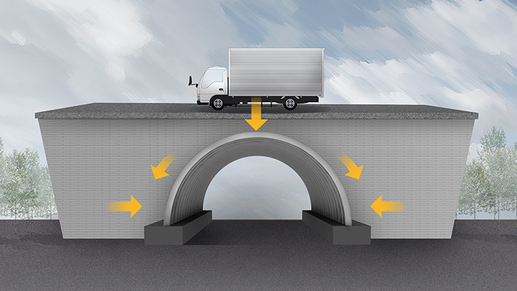
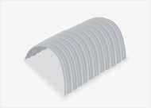

01 / STRUCTURE
Supported together with the ground
Uses the interaction between steel and the surrounding soil.

Corrugated steel structures for culverts, wildlife crossings, bridges and mining applications.
Corrugated structural plate is formed by corrugating steel plate. It carries buried-structure loads through interaction with the surrounding soil.

Uses the interaction between steel and the surrounding soil.

Arch, circular and other shapes to suit the site geometry and intended use.

For culverts, wildlife crossings, bridges, mining and protective structures.
From rehabilitation to drainage culverts, mining, ammunition storage, wildlife crossings and bridges. Explore the photographs by application on one page.
Corrugated steel liners rehabilitate ageing passages, culverts and small bridges from within. Existing condition, remaining hydraulic opening, infill, grouting and construction sequence are reviewed together.


Drainage crossings and waterway connections, showing arch geometry, foundations, inlets, outlets and backfilling.


From completed mining structures to arch lifting, on-site assembly and backfilling.
GS enquiry · Newman, Western Australia


Igloo ammunition-storage construction: arch assembly, earth-covered exterior and interior. Facility identities are withheld; application follows the facility’s design and specifications.


Actual wildlife-crossing and ecotunnel applications, showing their connection to terrain, roads and passages.


Small bridges and road underpasses, illustrating site-specific geometry and assembly.


Review geometry and design conditions, then proceed with structural checks, drawings and site support.
Basic dimensions from the existing REXSTEEL product introduction. Confirm applicable specifications and supply scope for each project.
| Thickness (t) | Corrugation pitch (p) | Corrugation depth (d) |
|---|---|---|
| 3.4~9.0mm | 381mm | 140mm |
Review ground, loading, drainage and construction sequence together.

Confirm use, span and rise, cover, loading and ground conditions.

Fabricate plates to the design and review site assembly and connections.

Review backfilling, compaction and deformation control against the construction plan.
Contact us about products, design and construction support.